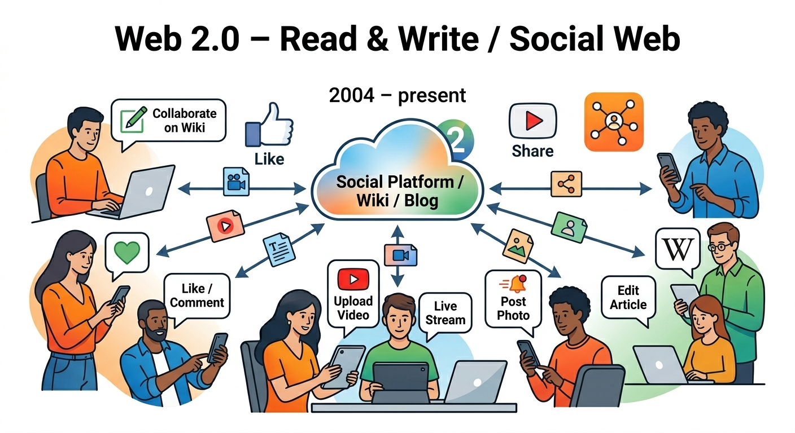

Web 2.0 refers to the second generation of the World Wide Web, which emerged in the early 2000s. It is characterized by increased interactivity, user-generated content, and the rise of social media platforms. Web 2.0 transformed the web from a static collection of pages into a dynamic and collaborative space.
Key features of Web 2.0 include:
Web 2.0 has had a profound impact on how people communicate, share information, and interact online. It has enabled the growth of social networks, online communities, and a more participatory web experience.